Controlled AI-assisted award interpretation
Turn complex awards and EAs into usable payroll guides.
Award Extractor uses AI to analyse award clauses and create a substantially complete draft of the payroll rules for user review. Deterministic checks make gaps, assumptions and judgement calls visible so the user can review and refine the draft.
What Award Extractor does
Any award interpretation should be reliable, accurate and faithful to its award source. It must identify the applicable source clauses and any areas of doubt.
While this seems like an ideal job for an AI process to extract award entitlements, how do we ensure that all clauses are included in any final output?
Frontier models are useful for answering specific questions, but they do not automatically provide full traceability for every clause or show how each clause may affect payment.
Award Extractor turns an award or enterprise agreement into a reviewable Interpretation Matrix by extracting each clause, checking whether it is relevant to payment, and assembling a substantially complete draft for user review.
The process preserves the source clauses, uses multiple LLM activities, and uses deterministic checks to test the hand-offs between stages. It gives a user a focused place to challenge the result.
The process creates three outputs:
- Interpretation MatrixA readable first version of award entitlements, with rulesets created from the relevant clauses.
- PseudocodeA readable description of the code needed to build a payroll engine for a particular award.
- Machine-readable ruleset fileA structured ruleset file produced from the current Interpretation Matrix for use by payroll software.
The process records omissions, differences and assumptions so that a user can decide what should happen next.
Potential uses
Start with more evidence, then apply judgement.
- A starting point for your Interpretation MatrixUse the structured clauses and draft rulesets to accelerate the first version of a reviewable interpretation.
- A secondary check on payroll rulesUse the clause coverage, warnings and evidence trail to check that relevant rules have been considered before configuration.
Why Award Extractor exists
Could AI reliably read an award, identify its payment clauses and produce a substantially complete draft for user review?
LLMs can answer focused questions well, but they tend to take text literally. Australian awards are not always written literally: clauses can interact or appear to contradict one another, and an important condition may be stated in one section but omitted from another.
LLMs are not lawyers. They cannot provide legal advice or determine a legally correct award interpretation.
Award Extractor uses AI to build an initial award interpretation, then uses structured checks to test the hand-offs between each stage.
The goal is a substantially complete, reviewable first version. The process identifies the questions that warrant user judgement.
The process in one view
The Interpretation Matrix is the principal draft artifact. It contains the selected rulesets for overtime creation, overtime consequence and penalties. It can be used directly for an initial review, or refined through optional user review before it is used to produce pseudocode and a machine-readable ruleset file.
View a sample pseudocode outputHow the quality is controlled
The process uses separate layers of review so that an AI error becomes a visible question rather than a silent change.
Core LLM activities propose clause classifications, interpretations and ruleset drafts.
LLM review challenges the LLM drafts and proposes changes.
Deterministic checks check coverage, references, duplicates, employee cohorts and required fields. Any queries are highlighted for user review so that concerns are visible and nothing is silently removed.
Optional user review is available on the consolidated Interpretation Matrix when assurance sign-off or judgement is needed. The user can edit to simplify or exclude rules while keeping the source references and changes visible. Those changes can be carried through into the pseudocode and machine-readable ruleset file.
A control identifying an employee-cohort mismatch
For the Aged Care Award, Award Extractor identified a concern: the day-worker span boundary was initially classified as applying to all employees, while the rule itself applies only to day workers. This difference matters when broad clause metadata is converted into an employee-specific payroll configuration.
The warning does not say the rule is wrong (in this case it is correct). It records the difference so a user can confirm the intended scope before the interpretation is used downstream.
The deterministic check identifies the discrepancy:
Classified as applying broadly → rule wording is employee-specific
The user decides whether the metadata should be narrowed to match the operative wording, or whether the rule needs an explicit scope note in the Interpretation Matrix.
Award Extractor identifies the concern. User review resolves questions of relevance and practical application.
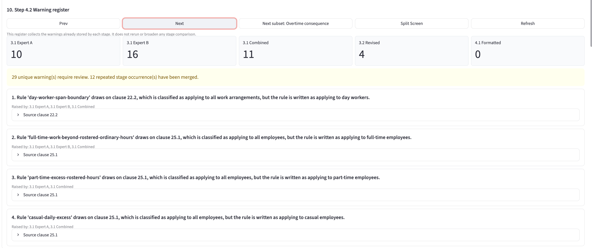
Detailed step-by-step process
Open a step to see the activity, the AI work, the deterministic controls and the files produced.
At each stage, the tool displays the available output files and highlights warnings. These include structured JSON, Markdown working files and validation reports. The process produces the first version before user review; the user review step is available afterwards for targeted review and edits.
Select any product image to view it full size.
1Fetch and structure the awardSource record
Retrieve the award from FWO, or use the supplied PDF. Parse the text into headings, clauses and subclauses, then write the snapshot to structured JSON.
N/A. This stage uses code to construct the award structure before interpretation begins.
Confirm the source can be accessed, construct the award structure using code, and check that the outputs can be serialised and written.
- Output Files
- Structured award JSON and source snapshot
2.1Classify payment-relevant clausesLLM + deterministic checks
Only payment-related clauses are relevant for this interpretation. Each clause is therefore classified as payment-relevant, definition-relevant or not relevant. Clauses that are not related to payment are omitted, with the classification and reason available for review. Relevant payment clauses are classified by payment type, including overtime, penalties, allowances, breaks and leave. Subclauses that are not relevant for payment purposes are excluded from downstream calculations.
An LLM reviews each top-level clause and records whether it is payment- and/or definition-relevant. It reviews each top-level subclause to classify the type of payment.
Check that every top-level clause group supplied to the classifier appears in the output. Check that each direct subclause is classified, marked not relevant or excluded by a documented filtering rule (i.e. nothing is silently excluded). Perform a deterministic sweep to identify clauses with wording that may make them relevant but were excluded by the AI. Detect duplicates, and record classifications, exclusions, corrections and edits.
- Files
- Payment classification JSON
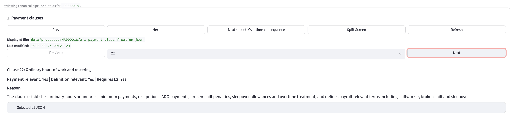
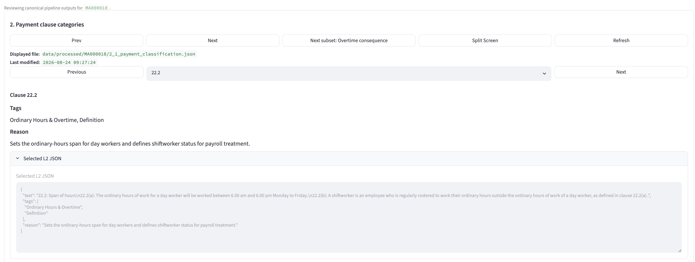
2.2Build the selected ruleset subsetLLM + deterministic checks
Award Extractor currently creates rulesets for hours worked and therefore focuses on overtime and penalties. Clauses that are not related to overtime or penalties are omitted. For each overtime clause, distinguish clauses that create overtime (i.e. determine when worked time becomes overtime) from clauses that describe what happens when overtime is worked (overtime consequences). In this summary, an employee cohort is the group to which a clause applies: full-time, part-time, casual, day workers, shift workers or all employees. Identify the applicable employee cohort where the award text supports it.
For overtime clauses, an LLM classifies each shortlisted clause into Overtime Creation or Overtime Consequence. All penalty clauses are kept together and classified as penalties. For each clause, the LLM proposes the relevant employee cohort.
Confirm every shortlisted clause is classified into an applicable category. Reject duplicate or invented references, validate classification and employee-cohort fields, and check that each cohort is supported by the clause text. Where a clause does not specify an employee cohort, apply the cohort "All". For penalties, apply predefined code rules to select clauses, assign the penalty classification and set the scope.
- Files
- Ruleset clause-classification JSON
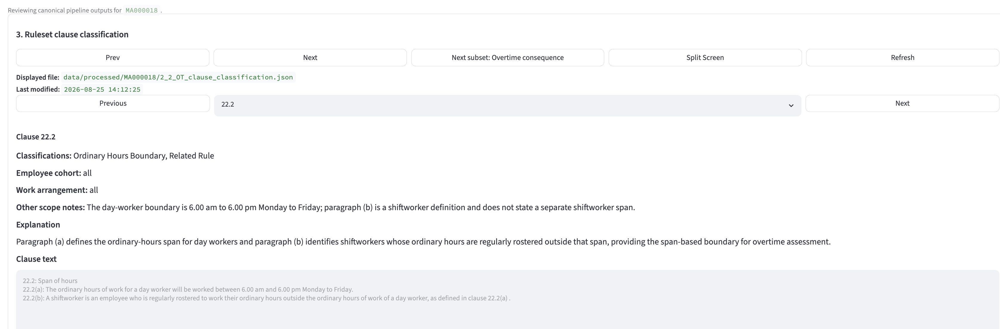
3.1Draft and combine a rulesetLLM activities + checks
Convert selected clauses into explicit payroll rules designed to be read by a payroll officer. For accuracy, two independent drafts are prepared by two separate LLM calls, then compared and combined into one combined draft ruleset.
An LLM runs two independent expert interpretations. Expert A and Expert B each produce a structured ruleset from Step 2.2. A further LLM comparison call proposes how the drafts should be reconciled.
Validate both expert rule lists and the comparison output. Confirm that every rule from either expert is accounted for in the comparison and combined ruleset. Identify any clauses in the Step 2.2 output that are not in either expert ruleset, along with any employee-cohort mismatches.
- Files
- Expert A and B drafts, comparison output and combined ruleset component
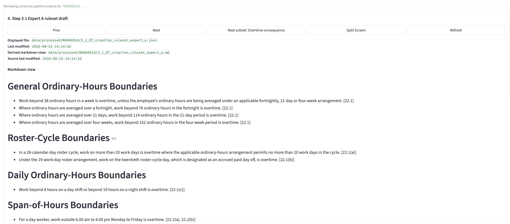
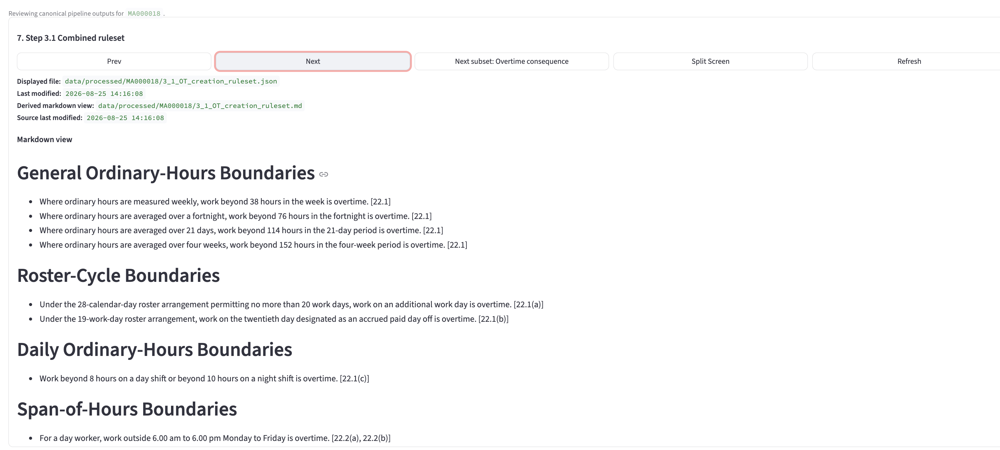
3.2Adversarially review the draftLLM evaluator + creator
Review the Step 3.1 combined ruleset against the clause evidence and classifications from Steps 2.1 and 2.2. The evaluator records rule-by-rule recommendations, including proposed new rules. The creator records decisions and rebuilds the revised ruleset component.
An LLM evaluator reviews the combined ruleset against clause evidence. A separate LLM creator records keep, modify, remove and add decisions and produces the revised ruleset.
Require every original rule to be addressed. Prevent silent removals and additions (any excluded rules are highlighted for user review), require tracked evaluator and creator records for additions, rebuild from structured decisions, and surface reductions in clause coverage. Any rules in the combined Step 3.1 ruleset that are not in the revised Step 3.2 ruleset are highlighted for user review.
We want the expert review to add or remove rules as applicable, but we do not want rules removed without the creator being aware of and agreeing to the removal.
- Files
- Evaluator feedback, creator response, revised ruleset and clause-coverage warnings
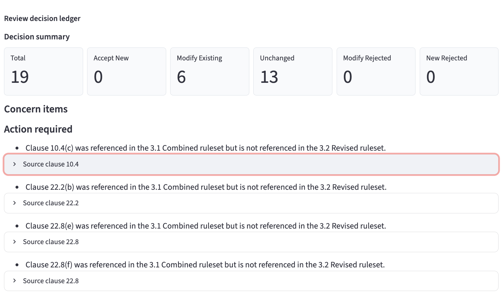
4.1Create the Interpretation MatrixLLM + coverage warning
Select the revised ruleset component and format it as a clear, user-facing Interpretation Matrix using the appropriate ruleset headings and formatting template.
An LLM reorganises and rewrites the LLM-reviewed component into the required Interpretation Matrix format. The activity is intended to format the existing interpretation, rather than create a new one.
Compare the LLM-reviewed component with the formatted output and identify omissions or changes that need user review. Produce warnings rather than proceeding with automatic repairs.
- Files
- Interpretation Matrix and coverage-warning output
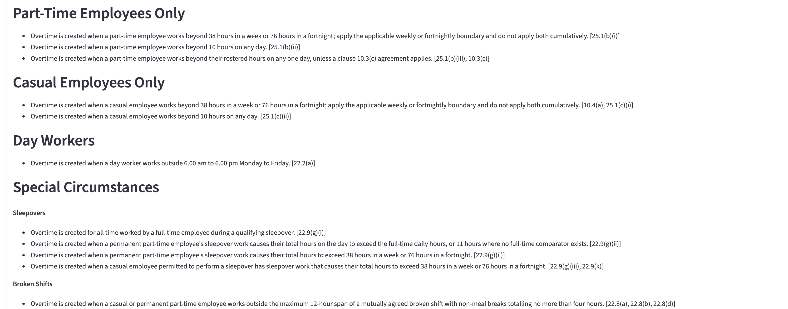
4.9Optional user review of the Interpretation MatrixOptional assurance review
Provide the formatted Interpretation Matrix for optional user review, allowing the user to make any required changes. This can be read alongside the evolving drafts and any warnings produced through the process. A user-edited version becomes the preferred source for the pseudocode and machine-readable ruleset file where additional assurance is required.
- Files
- User-reviewed Interpretation Matrix Markdown working file
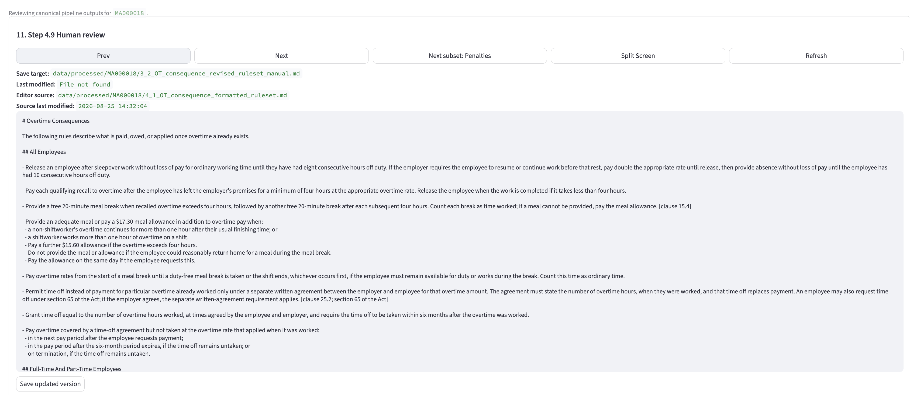
5.1Generate pseudocode from the current rulesetLLM + rule inventory
Select the current Interpretation Matrix, build an inventory of its rulesets, and generate implementation-oriented pseudocode for technical teams.
An LLM translates the current Interpretation Matrix and ruleset inventory into pseudocode, required inputs, decision logic and outputs.
Compare the pseudocode against the source-rule inventory. Identify missing rule coverage and check required inputs, exclusions, reasons and clause references. Write validation JSON and Markdown reports.
- Files
- Pseudocode Markdown and validation JSON/Markdown
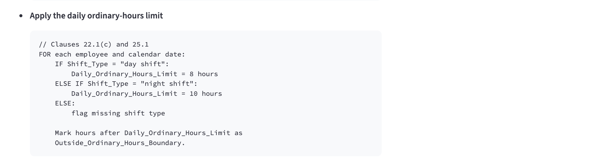
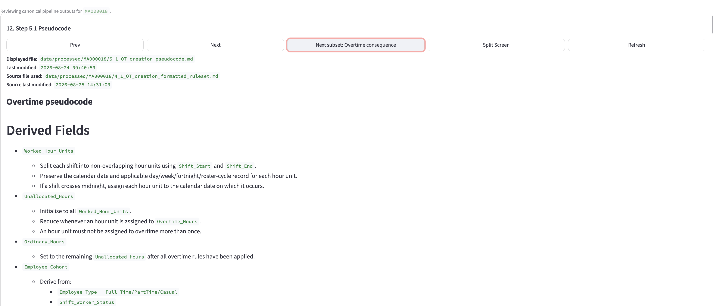
6.1Generate the calculator questionnaire and Python draftLLM + evidence
Load the three current rulesets contained in the Interpretation Matrix: overtime creation, overtime consequence and penalties. Answer a fixed calculator questionnaire and generate a Python draft for the PayGuide calculator.
An LLM interprets the three current rulesets to answer the structured questionnaire with supporting evidence, then generates a Python draft from that questionnaire.
Validate questionnaire values, normalise the response, retain evidence, identify unsupported or missing fields, and generate Python from the structured questionnaire.
- Files
- Calculator questionnaire JSON and calculator Python draft
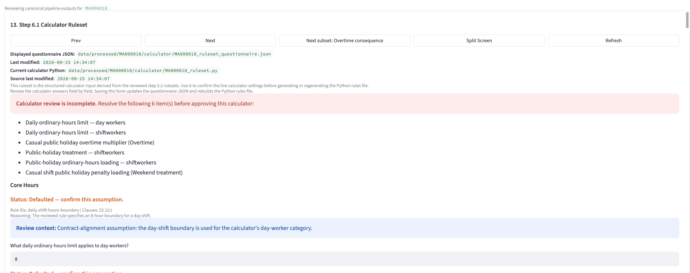
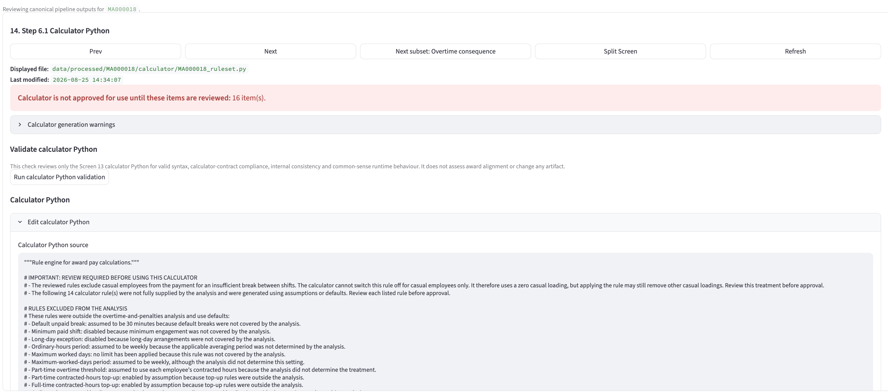
7.1Create the machine-readable ruleset fileStructured output + validation
Convert the Interpretation Matrix and its rulesets into the machine-readable schema required by payroll software. Where a user has made edits, use that user-edited version.
The Interpretation Matrix ruleset data is structured into the required machine-readable format. This output is generated from the current Matrix, including any user edits, rather than from an earlier draft.
Validate the schema, required fields, rule references, employee cohorts and supported input values before the file is made available to downstream payroll software.
- Files
- Machine-readable ruleset file
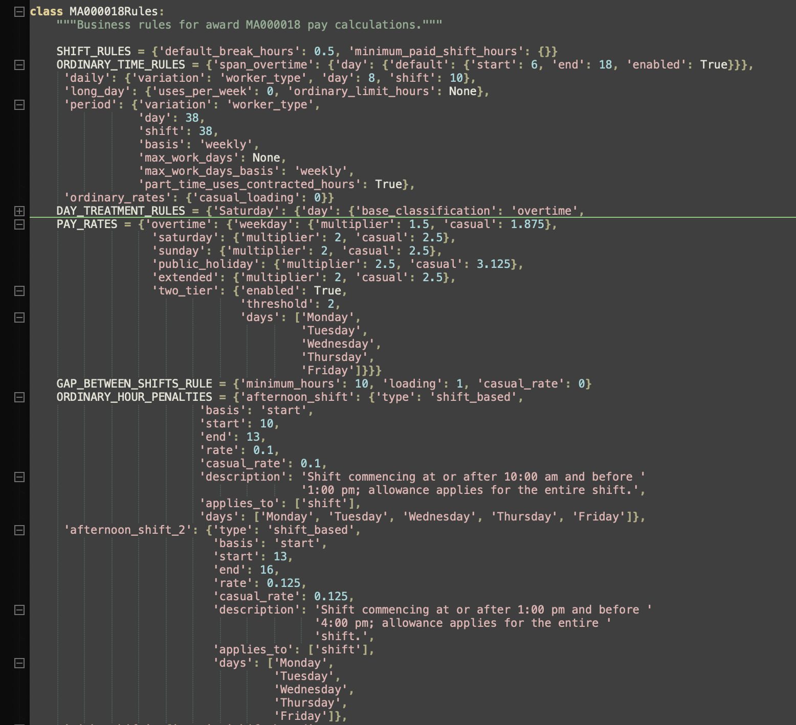
MA000018Rules class is the final
machine-readable artifact used by the calculator implementation.Caveats
Award Extractor supports award interpretation and payroll assurance. It does not provide legal advice, replace professional judgement, or constitute a definitive legal or payroll authority.
- LLMs can miss how clauses interact, even when they answer a specific question well.
- The Interpretation Matrix can contain more detail than a practical payroll implementation requires; user prioritisation and simplification are still required.
- Deterministic controls validate structure, coverage and consistency, but cannot determine whether an interpretation is legally correct.
- Optional user review is currently performed through the visible Markdown working files.
- Enterprise agreements and unusual award provisions may require additional review and configuration.
This software produces useful outputs that can support a secondary review of payroll entitlements.
For guidance on award obligations, consult Fair Work Ombudsman resources and, where appropriate, a qualified legal adviser.
Get in touch
Interested in putting an award through the process?
Email PayGuide if you would like to put an award or enterprise agreement through the process.